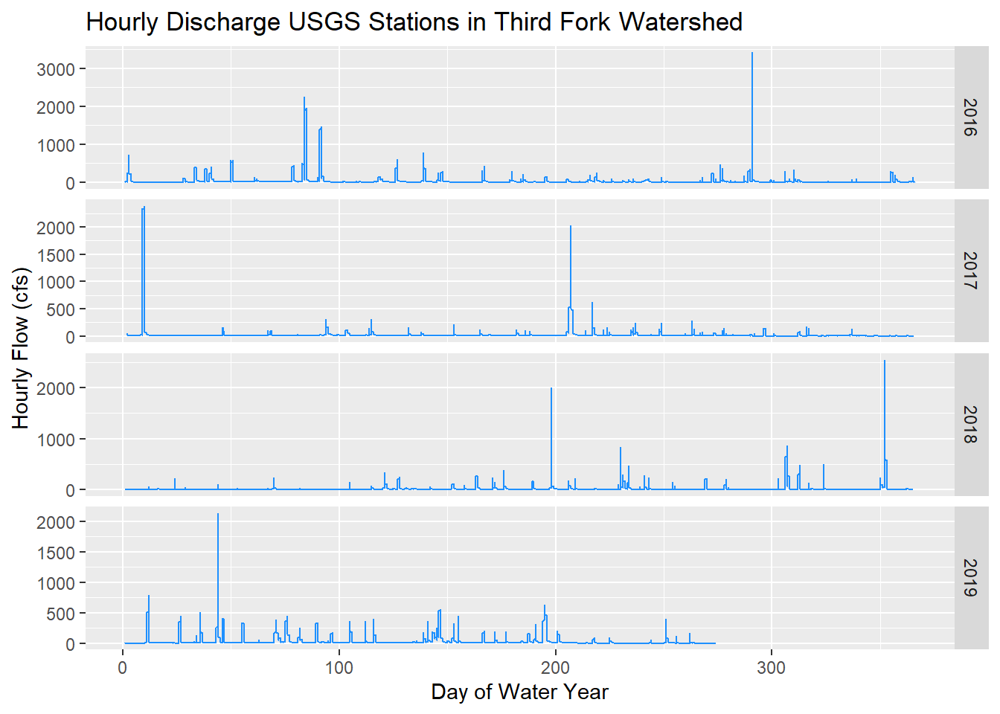

Spatial Operations 2
Lesson Goals
- Learn ways to extract and summarize raster data by point and by polygon
- Explore working with water data using
dataRetrieval
Data Retrieval package
Let’s explore the DataRetrieval package a bit and download some sample data. This is a phenomenal package for retrieving and working with USGS and EPA hydrology and water quality data. There is a lot to this package - I’m still learning, and we’ll just scratch the surface. For more info look at the USGS site and online tutorial.
library(dataRetrieval)
library(sf)
Durham_Stations <- readNWISdata(stateCd="North Carolina", countyCd="Durham")
# DataRetrival returns objects as 'attributes' - things like the url used, site metadata, site info, etc - just use attributes(Durham_Stations) to examine
siteInfo <- attr(Durham_Stations , "siteInfo")
stations_sf = st_as_sf(siteInfo, coords = c("dec_lon_va", "dec_lat_va"), crs = 4269,agr = "constant")
ThirdFork <- st_read('data/Third_Fork.shp')## Reading layer `Third_Fork' from data source `F:\Git Projects\R-User-Group-Spatial-Workshop-2018\data\Third_Fork.shp' using driver `ESRI Shapefile'
## Simple feature collection with 1 feature and 21 fields
## geometry type: POLYGON
## dimension: XY
## bbox: xmin: -78.96945 ymin: 35.90316 xmax: -78.86583 ymax: 35.99798
## epsg (SRID): 4269
## proj4string: +proj=longlat +datum=NAD83 +no_defsplot(ThirdFork$geometry, axes=T)
plot(stations_sf$geometry, add=T)
title(main='NWIS Stations and \nThird Fork Watershed')
We could clip our sites to our watershed, and create plots of hourly discharge for the three sites in our watershed - first we use spatial indexing to clip our stations:
ThirdForkSites <- stations_sf[ThirdFork,]Quick Exercise Fix the error we get in code above then continue on with next code chunk to clip and plot discharge
Ideas for leveraging DataRetrieval to plot hourly discharge from Ryan Peek.
library(ggplot2)
stations_sf <- st_transform(stations_sf, st_crs(ThirdFork))
library(lubridate)
ThirdForkSites <- stations_sf[ThirdFork,]
pCode <- "00060" # 00060 is flow
start.date <- "2015-10-01"
end.date <- "2018-03-30"
# get NWIS data - I'm passing all three station numbers to readNWISuv
ThirdForkFlow <- readNWISuv(siteNumbers = ThirdForkSites$site_no,
parameterCd = pCode,
startDate = start.date,
endDate = end.date)
# add the water year - this function in DataRetrieval knows the data range we have comprises one water year...
ThirdForkFlow <- addWaterYear(ThirdForkFlow)
# We can rename the columns to something easier to understand (i.e., not X00060_00000)
ThirdForkFlow <- renameNWISColumns(ThirdForkFlow)
# here we'll calculate and add approximate day of the WATER YEAR (doesn't take leap year into account)
ThirdForkFlow$DOWY <- yday(ThirdForkFlow$dateTime) + ifelse(month(ThirdForkFlow$dateTime) > 9, -273, 92)
# plot flow
(plot1 <- ggplot() + geom_line(data=ThirdForkFlow, aes(x=DOWY, y=Flow_Inst), color="dodgerblue") +
facet_grid(waterYear~., scales = "free_y") +
labs(y="Hourly Flow (cfs)", x= "Day of Water Year", title="Hourly Discharge USGS Stations in Third Fork Watershed"))
Notice I had all three stations in the function to retrive data, but only 1 was returned - apparently other two didn’t have data in that date range.
Summarize NHD in watershed
The next couple exercises we’ll look at summarizing and extracting data by polygons and points. First let’s review summarizing (aggregating) point or line data with polygon data using sf and dplyr. We’ll use our practice watershed and get the total stream length in the watershed using a shapefile of National Hydrography Data (NHD) flowlines. Note that I read in this NHD data using theFedData package, but it takes a while so I’ve put the downloaded data clipped to our watershed in the workshop ‘data’ folder.
library(dplyr)
NHD <- st_read('data/NHD_ThirdFork.shp')## Reading layer `NHD_ThirdFork' from data source `F:\Git Projects\R-User-Group-Spatial-Workshop-2018\data\NHD_ThirdFork.shp' using driver `ESRI Shapefile'
## Simple feature collection with 134 features and 16 fields
## geometry type: LINESTRING
## dimension: XY
## bbox: xmin: -78.9694 ymin: 35.90328 xmax: -78.87323 ymax: 35.99151
## epsg (SRID): 4269
## proj4string: +proj=longlat +datum=NAD83 +no_defsplot(ThirdFork$geometry, axes=T)
plot(NHD$geometry, add=T, col='blue')Quick Exercise Try generating a spatial summary using the same type of chained dplyr operation we used in SpatialOperations1 with schools and EnviroAtlas on your own - check the code if you get stuck.
stream_length = ThirdFork %>%
st_join(NHD) %>%
summarize(StreamLength = sum(LngthKM, na.rm = TRUE))This example is a bit contrived since we already know that all the stream lines are within the watershed, so we don’t really need to do a spatial join, we can just sum our ‘LngthKM’ variable in the ‘NHD’ object - you can do this to verify the result.
Raster Extract
It’s easy using the raster package to extract raster data for a set of points. Here we use our ‘stations_sf’ data our our elevation raster (we can read in with raster(‘data/NED.tif’)). The operation is simply ‘extract’ - if you feel advenurous see if you can figure out on your own (hint - data must be in same crs), or simply try to follow what code is doing.
library(raster)
stations_sf <-st_read('data/stations.shp')
elev <- raster('data/NED.tif')
st_crs(stations_sf)$proj4string == projection(elev)
stations_sf <- st_transform(stations_sf, crs=(projection(elev)))
stations_sf$elevation <- extract(elev, stations_sf)
# What am I doing on this next line?
stations_sf[!is.na(stations_sf$elevation),]Zonal Stats
Here we look at one of the most classic GIS exercises - summarizing landscape information within a watershed. We can again use the extract function from the raster package to get watershed statistics:
meanelev <- extract(elev, ThirdFork, fun = mean, na.rm = T, small = T)
meanelevI added a few extra parameters here, explore by using help(extract). Note also I passed an sf object to the y parameter in the extract function, but in help it describes options for y as being sp objects….yet it worked. I was surprised by this!
If you feel like exploring more, see a neat example put together by Ryan Hill and Marcus Beck of doing a multi-watershed delineation and metric calculation by leveraging the StreamStat Service API in R.
We could also run extract for our watershed on a raster stack or raster brick.
Quick Exercise Use terrain function in raster package to generate a terrain raster for our watershed just as we did in Spatial Operations 1 and generate metrics for the terrain raster brick - try on your own, answer below.
wat_terrain <- terrain(elev, opt = c("slope","aspect", "tri",
"tpi","roughness","flowdir"))
metrics <- extract(wat_terrain, ThirdFork, fun = mean, na.rm = T, small = T)
print(metrics)Summarize Categorical Raster
Let’s load NLCD (National Land Cover Data) to look at a categorical raster - note in code below I’ve commented out downloading using FedData - it takes a while so I’ve loaded it into the workshop data folder.
# library(FedData)
library(raster)
# NLCD <- get_nlcd(template = as(ThirdFork,'Spatial'),
# year = 2011,
# dataset = "landcover",
# label = "ThirdFork")
NLCD <- raster('data/NLCD.tif')
proj4string(NLCD)## [1] "+proj=aea +lat_1=29.5 +lat_2=45.5 +lat_0=23 +lon_0=-96 +x_0=0 +y_0=0 +ellps=GRS80 +towgs84=0,0,0,0,0,0,0 +units=m +no_defs"# we'll project to albers
ThirdFork_alb <- st_transform(ThirdFork, crs=projection(NLCD))
NLCD <- mask(NLCD, as(ThirdFork_alb,'Spatial'))
NLCD <- reclassify(NLCD, cbind(0, NA)) # A little trick to use since raster is using 0 as NA and plotting the value
plot(ThirdFork_alb$geometry, main="Land Cover in \nThird Fork Watershed", axes=T)
plot(NLCD, add=TRUE)So how do I get actual names of land cover values into my raster? There are a few ways we can explore our raster values, create factor levels and a ‘raster attribute table’ for the raster:
library(rasterVis)
hist(NLCD)NLCD <- ratify(NLCD)
rat <- levels(NLCD)[[1]]
rat$legend <- c("Water","Dev OS","Dev LI","Dev MI","Dev HI","Barren","Dec For","Ev For","Mix For","Shrub","Grass","Pasture","Wd Wet","Herb Wet")
levels(NLCD) <- rat
## Plot
levelplot(NLCD, col.regions=rev(terrain.colors(15)))
This is just one way to do it, and colors aren’t ideal - feel free to experiment.
OK, now let’s try summarizing our categorical raster - in order to make it more realistic, we’ll read in a set of NHDPlus catchments within our ThirdFork watershed (so we’ll have more than one feature to summarize over).
Catchments <- st_read('data/Third_ForkCats.shp')## Reading layer `Third_ForkCats' from data source `F:\Git Projects\R-User-Group-Spatial-Workshop-2018\data\Third_ForkCats.shp' using driver `ESRI Shapefile'
## Simple feature collection with 28 features and 4 fields
## geometry type: MULTIPOLYGON
## dimension: XY
## bbox: xmin: -78.96955 ymin: 35.90293 xmax: -78.86599 ymax: 35.99817
## epsg (SRID): 4269
## proj4string: +proj=longlat +datum=NAD83 +no_defs# Need to use projected CRS
Catchments <- st_transform(Catchments, crs=projection(NLCD))
plot(NLCD, axes=T, main="NHDPlus Catchments in \nThird Fork Watershed with NLCD")
plot(Catchments, add=T, col = NA, bord='black')Here is how I’ve put together code to do categorical raster summarization by polygon features - notice older functions I’m using that could be moved to chained dplyr operations and improved - see if you follow steps and we can talk through, and see if this triggers ideas for ways to improve this code. Additionally, here is a synopsis of doing same thing put together by Zev Ross - notice he includes a nice comparison of his results with ArdGIS Tabulate Area tool.
e = extract(NLCD,Catchments)
et = lapply(e,table)
library(reshape)
t <- melt(et)
t.cast <- cast(t, L1 ~ Var.1, sum)
head(t.cast)## L1 11 21 22 23 24 31 41 42 43 52 71 81 90 95
## 1 1 8 3744 3258 1608 420 0 645 124 104 0 68 52 113 0
## 2 2 7 1362 628 237 7 0 184 139 50 0 27 0 568 0
## 3 3 0 321 69 5 0 0 29 44 7 0 0 0 63 0
## 4 4 0 688 236 135 32 0 31 104 5 14 5 23 291 0
## 5 5 0 338 198 156 102 9 475 103 43 6 6 6 789 22
## 6 6 0 267 234 290 100 0 41 38 0 0 0 0 0 0names(t.cast)[1] <- 'FeatureID'
nlcd_stats <- data.frame(t.cast)
names(nlcd_stats)[2:15] <- c("Water","Dev OS","Dev LI","Dev MI","Dev HI","Barren","Dec For","Ev For","Mix For","Shrub","Grass","Pasture","Wd Wet","Herb Wet")
head(nlcd_stats)## FeatureID Water Dev OS Dev LI Dev MI Dev HI Barren Dec For Ev For
## 1 1 8 3744 3258 1608 420 0 645 124
## 2 2 7 1362 628 237 7 0 184 139
## 3 3 0 321 69 5 0 0 29 44
## 4 4 0 688 236 135 32 0 31 104
## 5 5 0 338 198 156 102 9 475 103
## 6 6 0 267 234 290 100 0 41 38
## Mix For Shrub Grass Pasture Wd Wet Herb Wet
## 1 104 0 68 52 113 0
## 2 50 0 27 0 568 0
## 3 7 0 0 0 63 0
## 4 5 14 5 23 291 0
## 5 43 6 6 6 789 22
## 6 0 0 0 0 0 0# Convert raw sums of categories to percent:
nlcd_stats$Total <- rowSums(nlcd_stats[,2:15])
head(nlcd_stats)## FeatureID Water Dev OS Dev LI Dev MI Dev HI Barren Dec For Ev For
## 1 1 8 3744 3258 1608 420 0 645 124
## 2 2 7 1362 628 237 7 0 184 139
## 3 3 0 321 69 5 0 0 29 44
## 4 4 0 688 236 135 32 0 31 104
## 5 5 0 338 198 156 102 9 475 103
## 6 6 0 267 234 290 100 0 41 38
## Mix For Shrub Grass Pasture Wd Wet Herb Wet Total
## 1 104 0 68 52 113 0 10144
## 2 50 0 27 0 568 0 3209
## 3 7 0 0 0 63 0 538
## 4 5 14 5 23 291 0 1564
## 5 43 6 6 6 789 22 2253
## 6 0 0 0 0 0 0 970#calculate %s for each nlcd category
for (i in 2:15){
nlcd_stats[,i] = 100.0 * nlcd_stats[,i]/nlcd_stats[,16]
}
nlcd_stats[,1] <- Catchments$FEATUREID[match(nlcd_stats$FeatureID, row.names(Catchments))]
head(nlcd_stats)## FeatureID Water Dev OS Dev LI Dev MI Dev HI Barren
## 1 8893204 0.07886435 36.90852 32.117508 15.851735 4.1403785 0.0000000
## 2 8893336 0.21813649 42.44313 19.569959 7.385478 0.2181365 0.0000000
## 3 8893346 0.00000000 59.66543 12.825279 0.929368 0.0000000 0.0000000
## 4 8894150 0.00000000 43.98977 15.089514 8.631714 2.0460358 0.0000000
## 5 8894154 0.00000000 15.00222 8.788282 6.924101 4.5272969 0.3994674
## 6 8893160 0.00000000 27.52577 24.123711 29.896907 10.3092784 0.0000000
## Dec For Ev For Mix For Shrub Grass Pasture Wd Wet
## 1 6.358438 1.222397 1.0252366 0.0000000 0.6703470 0.5126183 1.113959
## 2 5.733873 4.331567 1.5581178 0.0000000 0.8413836 0.0000000 17.700218
## 3 5.390335 8.178439 1.3011152 0.0000000 0.0000000 0.0000000 11.710037
## 4 1.982097 6.649616 0.3196931 0.8951407 0.3196931 1.4705882 18.606138
## 5 21.083000 4.571682 1.9085664 0.2663116 0.2663116 0.2663116 35.019973
## 6 4.226804 3.917526 0.0000000 0.0000000 0.0000000 0.0000000 0.000000
## Herb Wet Total
## 1 0.0000000 10144
## 2 0.0000000 3209
## 3 0.0000000 538
## 4 0.0000000 1564
## 5 0.9764758 2253
## 6 0.0000000 970